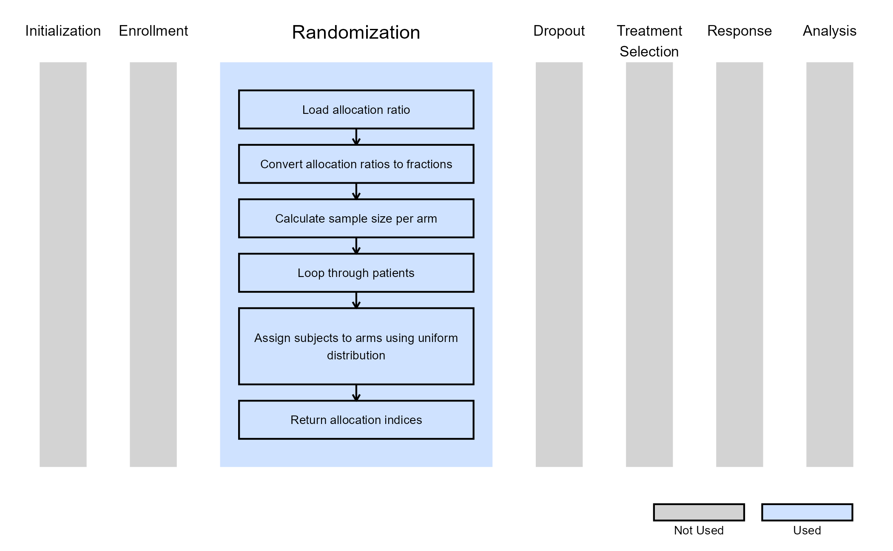
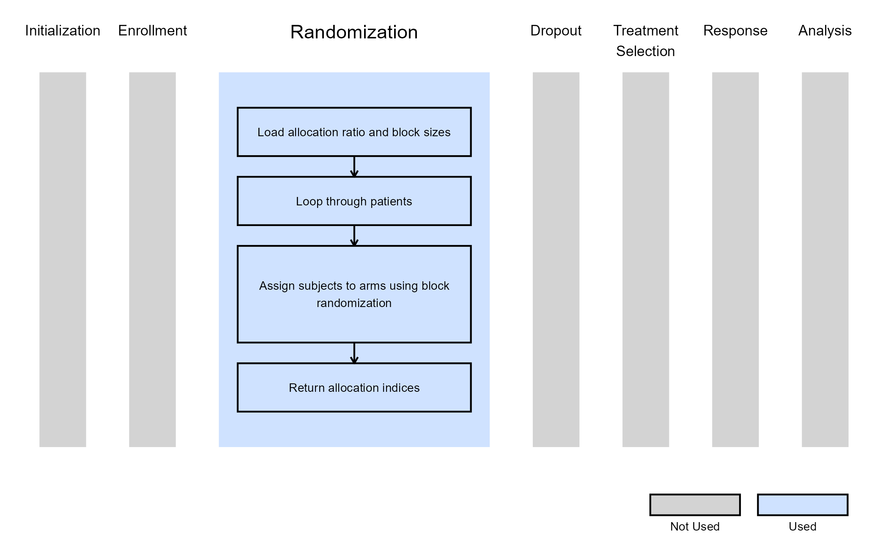

2-Arm - Randomization of Subjects
Shubham Lahoti
April 28, 2025
PatientRandomization.RmdThese examples are related to the Integration Point: Randomization. Click here for more information about this integration point.
Introduction
The following examples illustrate how to integrate new custom randomization methods and control how subjects are assigned to designated arms into East Horizon or East using R functions in the context of a two-arm trial.
Once CyneRgy is installed, you can load this example in RStudio with the following commands:
CyneRgy::RunExample( "RandomizeSubjects" )Running the command above will load the RStudio project in RStudio.
RStudio Project File: RandomizeSubjects.Rproj
In the R directory of this example you will find the following R files:
RandomizationSubjectsUsingUniformDistribution.R - Contains a function named RandomizationSubjectsUsingUniformDistribution to demonstrate the R code necessary for Example 1 as described below.
RandomizationSubjectsUsingSampleFunctionInR.R - Contains a function named RandomizationSubjectsUsingSampleFunctionInR to demonstrate the R code necessary for Example 2 as described below.
BlockRandomizationSubjectsUsingRPackage.R - Contains a function named BlockRandomizationSubjectsUsingRPackage to demonstrate the R code necessary for Example 3 as described below.
LoadrandomizeR.R - This file is used to install the randomizeR package for execution of Block Randomization in R.
Example 1 - Randomize Subjects Usings Uniform Distribution
This example is related to this R file: RandomizationSubjectsUsingUniformDistribution.R
The R function RandomizationSubjectsUsingUniformDistribution randomly assigns subjects to one of two arms using a uniform distribution.
This function does not use any user-defined parameters, but uses parameters specified in East Horizon. Refer to the table below for more information.
| Name of the parameter in East Horizon | Where to find the parameter in East Horizon | Name of the variable in the R script |
|---|---|---|
| Allocation Ratio | Design Card |
Steps:
- Generate a random number from a distribution.
- Define as the allocation fraction for the control arm, with as the allocation fraction for the treatment arm.
- If , assign the subject to the control arm; otherwise, assign them to the treatment arm.
- Ensure that the total sample size equals the sum of subjects in the control and treatment arms.
The figure below illustrates where this example fits within the R integration points of Cytel products, accompanied by a flowchart outlining the general steps performed by the R code.

Example 2 - Randomize Subjects Using Sample Function
This example is related to this R file: RandomizationSubjectsUsingSampleFunctionInR.R
The R function RandomizationSubjectsUsingSampleFunctionInR
uses the sample() function in R to randomly assign patients
to the control and treatment arms.
This function does not use any user-defined parameters, but uses parameters specified in East Horizon. Refer to the table below for more information.
| Name of the parameter in East Horizon | Where to find the parameter in East Horizon | Name of the variable in the R script |
|---|---|---|
| Allocation Ratio | Design Card |
Steps:
- Let be the allocation fraction for the control arm, with as the allocation fraction for the treatment arm.
- Compute the expected sample sizes (rounded) for both arms using the allocation fraction and total sample size.
- Randomly assign subject indices to the control and treatment arms
using the
sample()function in R. - Create a vector of zeros with size equal to the total number of subjects (), then replace the zeros with ones for indices corresponding to the treatment arm.
The figure below illustrates where this example fits within the R integration points of Cytel products, accompanied by a flowchart outlining the general steps performed by the R code.
Example 3 - Randomize Subjects Using randomizeR Package
This example is related to this R file: BlockRandomizationSubjectsUsingRPackage.R
The function BlockRandomizationSubjectsUsingRPackage.R uses
the randomizeR::pbrPar() function from the
randomizeR package to perform block randomization.
In small-sample studies, imbalances between groups can be minimized by using restricted randomization. This approach ensures that treatment groups are allocated in the desired proportions while maintaining randomness.
The permuted block randomization technique divides study participants into blocks, within which subjects are randomly assigned to treatment groups. This method ensures that the desired allocation proportions are exactly maintained within each block while keeping the order of assignments random.
Refer to the table below for the definitions of the user-defined parameters used in this example.
| User parameter | Definition |
|---|---|
| BlockSize1 | Size of the first block for the randomization process. |
| BlockSize2 | Size of the second block for the randomization process. |
| … | Block sizes for additional blocks follow the same format, incrementing the block number (e.g., BlockSize3, BlockSize4, etc.). |
This function also uses parameters specified in East Horizon. Refer to the tables below for more information.
| Name of the parameter in East Horizon | Where to find the parameter in East Horizon | Name of the variable in the R script |
|---|---|---|
| Allocation Ratio | Design Card |
The figure below illustrates where this example fits within the R integration points of Cytel products, accompanied by a flowchart outlining the general steps performed by the R code.
